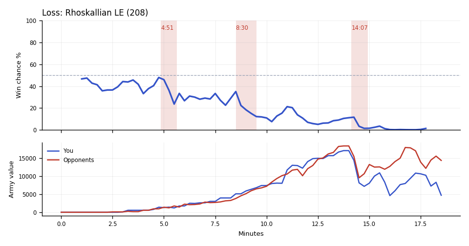

Loss. You lost because WildHunt's army traded 3.7x better in the last fight at TakeTheTip's natural and third, after earlier fights had drained your army.
Why
14:15–14:53: TakeTheTip took 15 s to look at the main; WildHunt's Marines killed Drones and Overlords, causing a supply block.
15:37–16:55: WildHunt's Siege Tanks and MeTaLisK's Carriers killed 22 Drones and the fourth Hatchery; TakeTheTip's workers fell afterward.
17:35–18:30: WildHunt's hidden army was twice yours going in, then killed the natural's Drones and Overlords.
Try next game
TakeTheTip: When a base flashes red on the minimap mid-fight, tap spacebar to see it and pull the Drones. Check: a raid costs fewer than 4 Drones.
Scallop: Start 2 Supply Depots when free supply drops below 8 before 11:00. Check: never supply-blocked 7:00–11:00.

Written by claude-sonnet-5-5 from the replay fact sheet.
Try: You went in with 17,125 of army against 18,425 and still lost the trade. Your army died mostly to Colossuses, Marines and Immortals.
Across the whole game
Enemy Siege Tanks (they made 20) destroyed 9,625 of your value (37 Zerglings, 13 Drones, 10 SCVs). Counters built after they first struck at 10:34: Scallop made 14 Liberators; TakeTheTip made none.
TakeTheTip had 7,604 unspent at 14:15.
Enemy Carriers (they made 8) destroyed 7,325 of your value (11 Vikings, 10 Drones, 8 Corruptors). Counters built after they first struck at 15:44: Scallop made 26 Vikings; TakeTheTip made 13 Corruptors, 1 Hydralisk.
TakeTheTip lost 28 Ultralisks (13,300) over the game, mostly to Immortals (10), Stalkers (5).
Scallop had 4,972 unspent at 17:15.
Compared with your other games
TakeTheTip was banking 797 at 6:00; in your wins usually 532. Across your earlier games, when it was like this you won 33% (57 games) vs 51% otherwise (157 games).
Scallop had been supply blocked for 107s by 12:00; in your wins usually 57s. Across your earlier games, when it was like this you won 39% (23 games) vs 52% otherwise (124 games).
Engine debrief-v3-0.5. Losses count only units killed by an enemy. Win chance comes from a model trained on your earlier games.
Earlier replay bookmarks
Earlier moments to revisit, considering both teammates. Each row groups nearby losses. Engine and chart windows may include other simultaneous losses. Values are minerals + gas. These bookmarks do not grade the decisions.
Local losses: Scallop lost 4 Hellions (400); TakeTheTip lost 13 Zerglings (325); duo total 725; opponents lost 2 Stalkers, 5 Probes (600)
Other recorded losses in this window: Scallop lost 9 SCVs (450); TakeTheTip lost 9 Zerglings (225); opponents lost 9 SCVs, 1 Oracle (750)
Local losses: TakeTheTip lost 6 Zerglings (150); opponents lost 7 Hellions (700)
Local losses: TakeTheTip lost 3 Drones (150); opponents lost 1 Banshee (250)
Replay map
◎ Historical player start · ◇ Resource cluster · ■ Completed grounded hall · □ Unfinished hall · ✕ Recorded hall ending Dashed rings show recorded events during the selected interval, not simultaneous live state. Symbols and player labels accompany colors.
Hall state
Unplaced halls
Recorded events and source evidenceExact map, registration and resource-site sources
Positive resource-site occupancy is recorded hall presence. Mining, vision, routes, local army availability and map control are unknown. The MMR-conditioned model estimate is unchanged. This panel cannot establish what caused a probability drop.
Older V2 evidence cards
Evidence-first cards are generated independently from the predictive model. Each card separates replay evidence, interpretation, past-only comparison, and an adjustment to test.
Abstained
No supported V2 insight
No supported window
Interpretation
No deterministic temporal pattern met the evidence and persistence checks for an actionable card.
Adjustment to test
No adjustment supported.
Confidence: AbstainedVisibility: replay_state
Evidence chain and comparison
Evidence
No qualifying factual evidence was retained.
Past-only comparison
No past-only comparison was used because no qualifying pattern was detected. Support: 0. Comparable replay IDs: None retained.
Provenance
No additional provenance was retained.
No qualifying deterministic V2 pattern was detected in the available replay evidence.
P(win) is an MMR-conditioned model estimate. Economy and Army Position compare the duo to historical positions at similar game times; they are not model-contribution lanes.
Raw State Comparisons
Observed tracker values, not race-normalized scores. Duo and opponent totals are shown alongside TakeTheTip and Scallop so the normalized lanes above can be checked against the underlying army, economy and bank quantities.
Observed Combat Outcomes
Positive bars favor the duo; negative bars favor the opponents. Each bar summarizes the preceding 15 seconds at a sampled boundary; selected-window summaries exclude future events. These observations do not prove the correct alternative decision.
Factual Replay Timeline
These milestones are replay facts synchronized to the selected window. They are context, not claims about what caused the result.